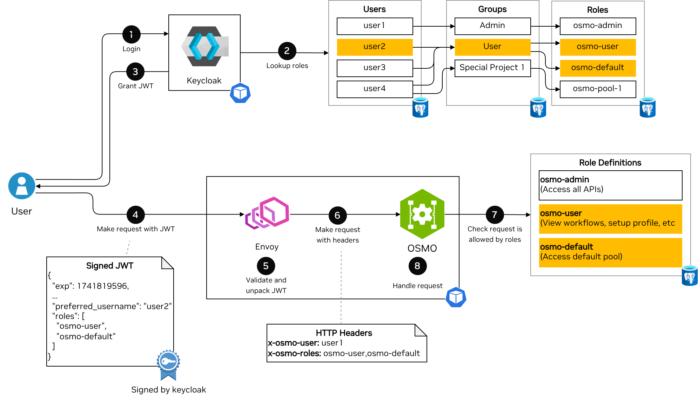
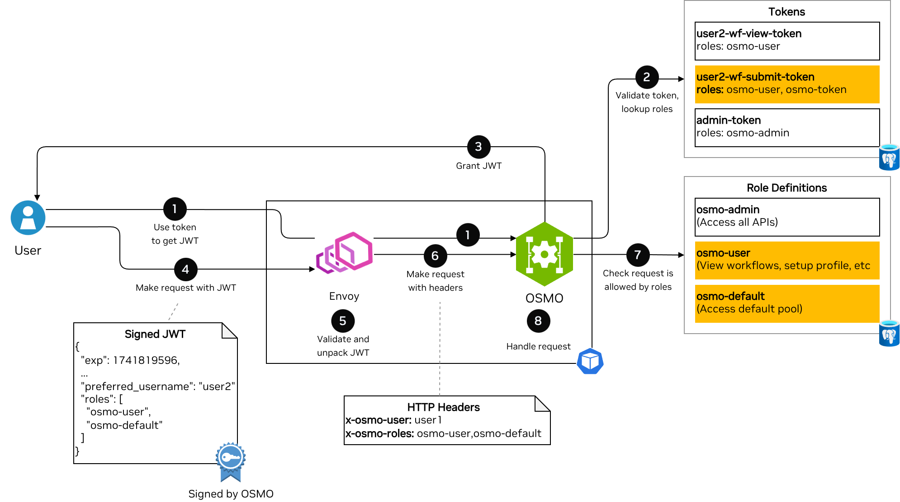

Authentication Flow#
This guide describes the detailed authentication flow in the OSMO platform.
Architecture Components#
The authentication system consists of the following components:
User: The end-user or entity accessing the OSMO platform. To use OSMO, the user must first acquire a signed JWT with roles and username claims (From Keycloak or from OSMO itself in the case of service accounts). Then it can make a request to OSMO using the JWT.
Keycloak: Stores mapping between users and groups and between groups and roles. It can be used to handle user authentication directly, or as an intermediary between users and external identity providers.
Identity Provider (IdP): Optional external authentication service (e.g., Microsoft Azure AD, etc.) that verifies user identity
Envoy: API gateway that ensures requests to OSMO are authenticated with a properly signed and validated JWT. All requests to OSMO must pass through the following two internal components (or filters) of Envoy:
OAuth2 Filter: Redirects the user to Keycloak’s authentication endpoint if the user is not authenticated (Missing or invalid
OAuthHMACcookie orx-osmo-authheader is not present).JWT Filter: Validates JWT token (provided either through the
IdTokencookie or thex-osmo-authheader)
OSMO Service: Backend services providing platform functionality. They evaluate the roles provided in the JWT and determine if the user has access to the requested resource.
User Login with Keycloak#
For a human user, logging in is done through a web browser using Keycloak.
Overview#
The below diagram illustrates the high level flow for a human user logging into OSMO.
{kind=link}
The flow contains the following steps:
Login: A user logs in with Keycloak. Keycloak supports multiple OAuth 2.0 flows such as device flow, and code flow. Keycloak may be configured to accept username and password directly, or redirect to an external identity provider.
Lookup roles: Keycloak looks up what roles a user has based on their group memberships. The roles from all groups are aggregated into a single list of roles.
Grant JWT: Keycloak issues a JWT token containing the user’s username (in the
preferred_usernameclaim) and roles (in therolesclaim).Make request with JWT: The user makes a request to OSMO using the JWT token in the
IdTokencookie (For the Web UI accessed through a browser) orx-osmo-authheader (For the CLI client).Validate and unpack JWT: Envoy validates the JWT token (Correct signature, not expired, correct
audandissclaims). It then unpacks therolesclaim into a comma separated list in thex-osmo-rolesheader and thepreferred_usernameclaim into thex-osmo-userheader.Make request with headers: Envoy then forwards the request to the OSMO service with the
x-osmo-userandx-osmo-rolesheaders set.Check request is allowed by roles: The OSMO service checks the definitions of the roles in its database, and compares with the request the user is trying to perform. If none of the roles provided allow the request, then OSMO will return a
403 Forbiddenerror.Handle request: The OSMO service will now handle the request and return the response to the user.
Warning
The OSMO service accepts the x-osmo-user and x-osmo-roles headers sent to it and does not validate the JWT.
To use OSMO securely, be sure to only allow access to the OSMO service through Envoy or some other reverse proxy that does the following:
Validates the authenticity of the JWT passed to it.
Strips
x-osmo-userandx-osmo-rolesheaders from the downstream request.Sets the
x-osmo-userandx-osmo-rolesheaders in the upstream request from the contents of the JWT.
Initialization#
During system initialization, Envoy retrieves public keys from Keycloak by making a request to
GET <keycloak>/realms/osmo/protocol/openid-connect/certsKeycloak returns the public keys (HTTP 200) used to verify JWT token signatures
Browser Based Login#
Users attempting to access OSMO through the Web UI will go through the browser based login flow.
Logging In#
The user attempts to access the OSMO web UI, or an OSMO API resources (e.g.,
GET <osmo>/api/workflows)The OAuth2 Filter in Envoy checks for authentication credentials and determines that:
No
OAuthHMACcookie is presentNo
x-osmo-authheader is present
Since the user is not authenticated, the OAuth2 Filter initiates the OAuth 2.0 Authorization Code flow (RFC 6749 Section 4.1 ). In the OAuth 2.0 flow, Envoy acts as the client, Keycloak acts as the authorization server, and the user’s web browser acts as the user agent.
Envoy returns a redirect (HTTP 302) to Keycloak’s authentication endpoint:
GET <keycloak>/realms/osmo/protocol/openid-connect/auth.The user authenticates with Keycloak. The user may authenticate directly with Keycloak using a username and password, or Keycloak may be configured to delegate authentication with the OAuth 2.0 Authorization Code flow to an external identity provider.
Keycloak redirects the user back to Envoy with a Keycloak authorization code (HTTP 302 to
<osmo>/api/auth/getAToken?code=<keycloak-code>).Envoy exchanges the Keycloak authorization code for a JWT token by requesting from Keycloak (
GET <keycloak>/realms/osmo/protocol/openid-connect/token?code=<keycloak-code>&...&grant_type=authorization_code).Keycloak generates JWT tokens with user roles based on the user’s group memberships and returns them to the OSMO service, as well as a refresh token (HTTP 200).
Envoy finally redirects the user back to the original request (e.g.,
GET <osmo>/api/workflows) with the following cookies set:OAuthHMAC: A hash-based message authentication code for session identification
BearerToken: The access token for API requests
IdToken: Contains user identity information (username, roles, etc.). This is the JWT token validated by the JWT filter and whose roles are extracted and passed to the OSMO Service.
RefreshToken: Used to obtain new tokens when the current ones expire
Authenticated Requests#
After logging in, all subsequent requests to OSMO will include the OAuthHMAC cookie (So they will not go back through the OAuth 2.0 Authorization Code flow again). They contain a valid IdToken, so they will pass the JWT filter as well.
Using Refresh Tokens#
Eventually, the IdToken and BearerToken will expire. When the user makes a request after these tokens expire, the OAuth2 filter will attempt to automatically use the refresh token as described in RFC 6749 Section 6 .
Envoy will call Keycloak’s token endpoint to get a new access token and id token
POST <keycloak>/realms/osmo/protocol/openid-connect/token?grant_type=refresh_token&refresh_token=<refresh_token>&...Envoy will include these new tokens as cookies as the request passes through the JWT filter and on to the OSMO Service.
When envoy returns the response, it will include
Set-Cookieheaders for the new tokens so they will be used in subsequent requests.
CLI Based Login#
Users attempting to access OSMO through the CLI will go through the CLI based login flow.
Logging In#
The user runs the
osmo login https://<osmo>command. The OSMO CLI calls theGET <osmo>/api/auth/loginendpoint to get the endpoint that will be used for device authorization login.The OSMO CLI client will initiate the OAuth 2.0 Device Authorization flow as specified in RFC 8628 . In the OAuth 2.0 flow, Keycloak acts as the authorization server, and the OSMO CLI acts as the device client.
The OSMO CLI will call Keycloak’s device authorization endpoint to get a device code and user code
POST <keycloak>/realms/osmo/protocol/openid-connect/auth/deviceKeycloak returns a device code, user code, and verification URL to the OSMO CLI.
The OSMO CLI will display the user code and Keycloak URL to the user to visit to complete the authentication.
The user visits the Keycloak verification URL (e.g.
<keycloak>/realms/osmo/device?user_code=<user-code>) and completes authentication.The OSMO CLI continuously polls keycloak using the device code to check if authentication is complete.
Once authentication is complete, Keycloak will return an access token, id token and refresh token to the OSMO CLI.
Authenticated Requests#
The OSMO CLI client will now include the id token in the x-osmo-auth header for all requests to the OSMO service.
Using Refresh Tokens#
Eventually, the IdToken will expire. When the user attempts the use the CLI, the CLI will check if the id token is expired. If it is, the CLI will use the refresh token as described in RFC 6749 Section 6 to get a new id token before making the request.
Token Based Login Directly through OSMO#
For a service account or script, logging in through Keycloak is cumbersome due to the usage of a web browser in the auth flow. For use cases like this, OSMO allows the creation of tokens that can be exchanged for a JWT that is signed by OSMO.
Overview#
The below diagram illustrates the high level flow for a service account or script logging into OSMO.
{kind=link}
The flow contains the following steps:
Use token to get JWT: The script uses the token (With either the
/api/auth/jwt/access_tokenor/api/auth/jwt/refresh_tokenendpoints depending on the token type) to request a signed JWT token from OSMO. Envoy will allow requests to these endpoints to proceed without authentication.Validate token, lookup roles: OSMO will validate that the token is valid and not expired and will lookup the roles corresponding to the token.
Grant JWT: OSMO will generate a JWT token containing the roles and username corresponding to the name of the token.
Make request with JWT: The user makes a request to OSMO using the JWT token in the
IdTokencookie (For the Web UI accessed through a browser) orx-osmo-authheader (For the CLI client).Validate and unpack JWT: Envoy validates the JWT token (Correct signature, not expired, correct
audandissclaims). It then unpacks therolesclaim into a comma separated list in thex-osmo-rolesheader and thepreferred_usernameclaim into thex-osmo-userheader.Make request with headers: Envoy then forwards the request to the OSMO service with the
x-osmo-userandx-osmo-rolesheaders set.Check request is allowed by roles: The OSMO service checks the definitions of the roles in its database, and compares with the request the user is trying to perform. If none of the roles provided allow the request, then OSMO will return a
403 Forbiddenerror.Handle request: The OSMO service will now handle the request and return the response to the user.
Initialization#
During system initialization, the OSMO service will generate a public/private key pair for signing/validating tokens if one is not already present (See /api/configs/service for more information).
Envoy will request the public key from the OSMO service by making a request to
GET <osmo>/api/auth/jwt/public_keyOSMO will return the public key (HTTP 200) used to verify JWT token signatures
Logging In#
When token based login is used, the CLI or other service will use the /api/auth/jwt/access_token or /api/auth/jwt/refresh_token endpoints to get a JWT token.
Tokens created through the
osmo tokenAPI will use the/api/auth/jwt/access_tokenendpoint.Running workflows that need to log in to OSMO to push logs will use the
/api/auth/jwt/refresh_tokenendpoint.
Authenticated Requests#
Authenticated requests will include the returned JWT token in the x-osmo-auth header. This JWT token will be signed by OSMO rather than Keycloak, so
Envoy’s JWT filter must be configured to recognize OSMO’s public key as well as the Keycloak public key.
If the JWT token is expired or will expire soon, the CLI or workflow will request a new one using the same /api/auth/jwt/access_token or /api/auth/jwt/refresh_token endpoint.
Advanced Keycloak Configuration#
Keycloak can be configured to allow users to log in directly with a username and password.
Keycloak can also be configured to integrate with an external identity provider (such as Azure AD, Google Workspace, and others) for improved integration with your organization’s authentication systems. For more information on integrating external identity providers with Keycloak, refer to the Keycloak documentation .
Troubleshooting#
Common Authentication Issues#
- User Cannot Log In
Verify identity provider configuration
Check identity provider logs for authentication errors
Ensure the user has the necessary permissions in the identity provider
- Missing Group Memberships
Verify identity provider mapper configuration
Check that the expected claims are present in the identity provider token
Review Keycloak logs for mapping errors
- Token Validation Failures
Ensure Keycloak’s public key is correctly configured in OSMO services
Check for clock skew between services
Verify token signature algorithm matches the expected algorithm
See also
Keycloak Group and Role Management for configuring Keycloak roles and groups
Roles and Policies for understanding OSMO roles and policies